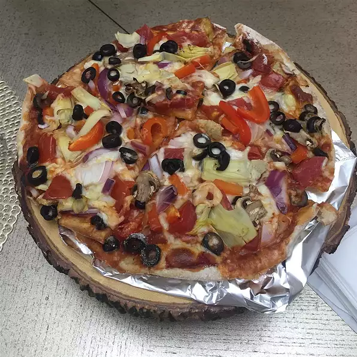

Pesto Pizza

Description
A great alternative to your regular pizza.
Ingredients
- 1 (12 in) pre-baked pizza crust
- 1/2 cup pesto
- 1 ripe tomato, chopped
- 1/2 cup green bell papper, chopped
- 2 oz can chopped black olives, drained
- 1/2 small red onion, chopped
- 4 oz can artichoke hearts, drained and sliced
- 1 cup crumbled feta cheese
Steps
- Preheat oven to 450 degrees F (230 degrees C).
- Spread pesto on pizza crust. Top with tomatoes, bell peppers,
olives, red onions, artichoke hearts, and feta cheese.
- Bake for 8 to 10 minutes, or until cheese is melted and browned.